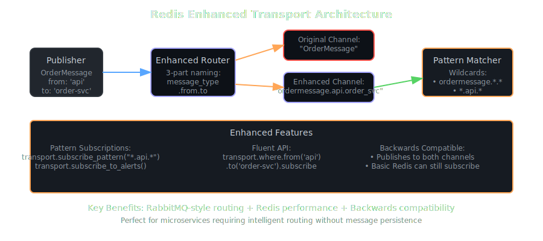
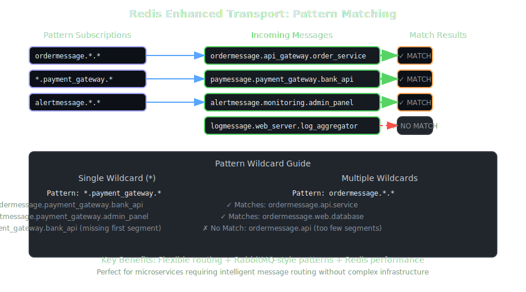
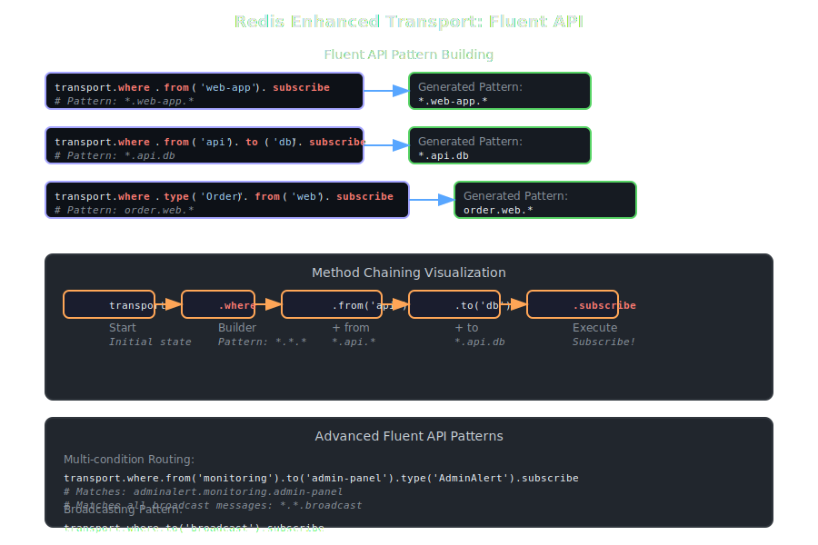
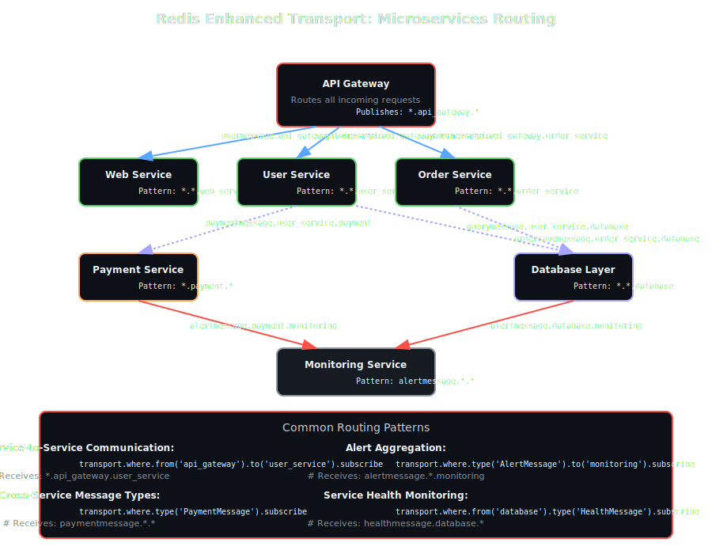
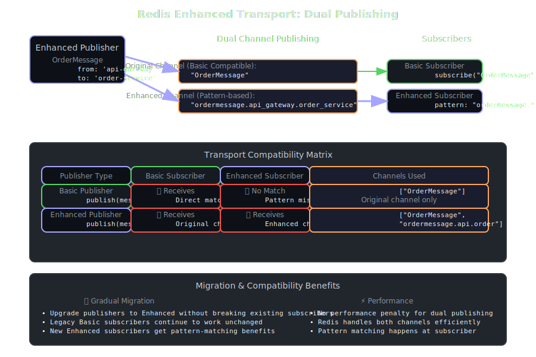

Redis Enhanced Transport¶
The Redis Enhanced Transport extends the basic Redis transport with RabbitMQ-style pattern matching and intelligent routing capabilities. It provides sophisticated message routing while maintaining full backwards compatibility with the basic Redis transport.
Overview¶
Redis Enhanced Transport is perfect for: - Microservices architecture - Sophisticated routing between services - Pattern-based routing - RabbitMQ-style patterns without RabbitMQ - Legacy compatibility - Gradual migration from basic Redis transport - Development flexibility - Advanced routing for complex applications
Key Features¶
- 🎯 Pattern-Based Subscriptions - Wildcard support (
*patterns) - 🔄 Dual Channel Publishing - Backwards compatibility with basic transport
- 🛠️ Fluent API - Chainable subscription building
- 📡 Enhanced Routing - 3-part channel names:
message_type.from.to - 🚀 High Performance - ~1.2ms latency, 75K+ messages/second
- 🔌 Drop-in Replacement - Seamless upgrade from basic Redis transport
Architecture¶

The Enhanced Transport uses a sophisticated 3-part channel naming scheme and publishes to both original and enhanced channels for backward compatibility.
Channel Format¶
Enhanced channels use a structured naming scheme:
Examples:
- ordermessage.api_gateway.order_service
- paymentmessage.payment_service.bank_gateway
- alertmessage.monitoring.admin_panel
Pattern Matching¶

Wildcard Support¶
*- Matches exactly one segment- Pattern Examples:
ordermessage.*.*- All order messages*.payment_gateway.*- All messages from payment gatewayalertmessage.*.*- All alert messages
Fluent API¶

Build complex subscription patterns with chainable methods:
# Basic patterns
transport.where.from('api-gateway').subscribe # *.api-gateway.*
transport.where.to('order-service').subscribe # *.*.order-service
transport.where.type('OrderMessage').subscribe # ordermessage.*.*
# Combined patterns
transport.where.from('api').to('service').subscribe # *.api.service
transport.where.type('Alert').from('monitoring').subscribe # alert.monitoring.*
Configuration¶
Basic Setup¶
# Minimal configuration
transport = SmartMessage::Transport::RedisEnhancedTransport.new
# With options
transport = SmartMessage::Transport::RedisEnhancedTransport.new(
url: 'redis://localhost:6379',
db: 0,
auto_subscribe: true,
reconnect_attempts: 5,
reconnect_delay: 1
)
Using with SmartMessage¶
# Configure as default transport
SmartMessage.configure do |config|
config.default_transport = SmartMessage::Transport::RedisEnhancedTransport.new
end
# Enhanced message with routing
class OrderMessage < SmartMessage::Base
property :order_id, required: true
property :customer_id, required: true
# Set source and destination for routing
from 'api-gateway'
to 'order-service'
transport :redis_enhanced
def process
puts "Processing order #{order_id} from #{_sm_header.from} to #{_sm_header.to}"
end
end
Configuration Options¶
Inherits all options from Redis Transport:
| Option | Type | Default | Description |
|---|---|---|---|
url |
String | redis://localhost:6379 |
Redis connection URL |
db |
Integer | 0 |
Redis database number |
auto_subscribe |
Boolean | true |
Automatically start subscriber |
reconnect_attempts |
Integer | 5 |
Connection retry attempts |
reconnect_delay |
Integer | 1 |
Seconds between retries |
Usage Examples¶
Basic Pattern Subscriptions¶
# Subscribe to all order messages
OrderMessage.subscribe_pattern('ordermessage.*.*')
# Subscribe to messages from specific service
transport.subscribe_from_sender('payment-gateway')
# Subscribe to messages for specific service
transport.subscribe_to_recipient('order-service')
# Subscribe to all messages of a type
transport.subscribe_to_type('AlertMessage')
Fluent API Examples¶
# Service-specific routing
transport.where
.from('web-app')
.to('user-service')
.subscribe
# Message type filtering
transport.where
.type('AnalyticsEvent')
.from('web-app')
.subscribe
# Complex routing conditions
transport.where
.from('monitoring')
.to('admin-panel')
.type('AdminAlert')
.subscribe
Microservices Communication¶

# API Gateway → Service routing
class UserRequest < SmartMessage::Base
property :user_id, required: true
property :action, required: true
from 'api-gateway'
to 'user-service'
def process
puts "User #{user_id} action: #{action}"
end
end
# Service → Database routing
class UserQuery < SmartMessage::Base
property :query, required: true
from 'user-service'
to 'database'
def process
puts "Executing query: #{query}"
end
end
# Subscribe to service-specific messages
transport.where.to('user-service').subscribe # All messages to user service
transport.where.from('api-gateway').subscribe # All messages from API gateway
Convenience Methods¶
# Subscribe to broadcasts
transport.subscribe_to_broadcasts # *.*.broadcast
# Subscribe to alerts from any service
transport.subscribe_to_alerts # alertmessage.*.*, *alert*.*.*
# Subscribe to specific recipient
transport.subscribe_to_recipient('payment-service') # *.*.payment-service
# Subscribe to specific sender
transport.subscribe_from_sender('monitoring') # *.monitoring.*
# Subscribe to message type
transport.subscribe_to_type('OrderMessage') # ordermessage.*.*
Dual Publishing¶

Enhanced Transport maintains backwards compatibility by publishing to both channel formats:
Publishing Behavior¶
# When OrderMessage publishes:
OrderMessage.new(order_id: 'ORD-001').publish
# Results in publications to BOTH:
# 1. "OrderMessage" (basic format - for compatibility)
# 2. "ordermessage.api_gateway.order_service" (enhanced format)
Subscriber Compatibility¶
- Basic Redis subscribers → Receive from original channel
- Enhanced Redis subscribers → Receive from enhanced channel
- Both can coexist → Gradual migration possible
Advanced Routing Patterns¶
Environment-Based Routing¶
# Development services
transport.where.to(/^(dev|staging)-.*/).subscribe
# Production services
transport.where.to(/^prod-.*/).subscribe
# Cross-environment alerts
transport.where
.type('Alert')
.from(/^(prod|staging)-.*/)
.to('monitoring')
.subscribe
Service Pattern Routing¶
# All payment-related services
transport.where.from(/^payment-.*/).subscribe
# API layer to service layer
transport.where
.from(/^(web|mobile|api)-.*/)
.to(/^.*-service$/)
.subscribe
# Monitoring aggregation
transport.where
.type('MetricMessage')
.to('monitoring')
.subscribe
Message Filtering¶
class AlertMessage < SmartMessage::Base
property :level, required: true
property :message, required: true
from 'monitoring'
def process
puts "[#{level.upcase}] #{message}"
end
end
# Subscribe only to critical alerts
AlertMessage.subscribe(from: 'monitoring') do |message|
message.level == 'critical'
end
# Subscribe to alerts from specific services
AlertMessage.subscribe(from: /^(database|api)-.*/)
Performance Characteristics¶
- Latency: ~1.2ms average (slightly higher due to pattern processing)
- Throughput: 75,000+ messages/second
- Memory per Subscriber: ~2MB (pattern storage overhead)
- Concurrent Subscribers: ~250 practical limit
- Pattern Processing: Minimal CPU overhead
- Backwards Compatibility: No performance penalty
API Reference¶
Pattern Subscription Methods¶
#subscribe_pattern(pattern)¶
Subscribe to messages matching a specific pattern.
#where¶
Returns a fluent API builder for complex subscriptions.
Convenience Methods¶
transport.subscribe_to_recipient('service-name') # *.*.service-name
transport.subscribe_from_sender('service-name') # *.service-name.*
transport.subscribe_to_type('MessageType') # messagetype.*.*
transport.subscribe_to_alerts # Alert patterns
transport.subscribe_to_broadcasts # *.*.broadcast
Fluent API Builder Methods¶
#from(service_name)¶
Filter messages from specific service(s).
transport.where.from('api-gateway') # String match
transport.where.from(/^api-.*/) # Regex match
transport.where.from(['api', 'web']) # Array match
#to(service_name)¶
Filter messages to specific service(s).
transport.where.to('order-service') # String match
transport.where.to(/^.*-service$/) # Regex match
transport.where.to(['user-svc', 'order-svc']) # Array match
#type(message_type)¶
Filter by message type.
#subscribe(&block)¶
Execute the subscription with optional filtering block.
transport.where.from('api').subscribe do |message|
message.priority == 'high' # Additional filtering
end
Migration from Basic Transport¶
Step 1: Enable Enhanced Transport¶
# Before (Basic Redis)
SmartMessage.configure do |config|
config.default_transport = SmartMessage::Transport::RedisTransport.new
end
# After (Enhanced Redis)
SmartMessage.configure do |config|
config.default_transport = SmartMessage::Transport::RedisEnhancedTransport.new
end
Step 2: Gradual Pattern Adoption¶
# Existing subscriptions continue to work
OrderMessage.subscribe # Still works exactly the same
# New subscriptions can use patterns
OrderMessage.subscribe_pattern('ordermessage.api.*') # New capability
Step 3: Enhanced Message Design¶
# Enhanced messages with routing info
class NewOrderMessage < SmartMessage::Base
property :order_id, required: true
from 'api-gateway'
to 'order-service'
# Inherits enhanced capabilities automatically
end
Best Practices¶
Pattern Design¶
- Use consistent service naming conventions
- Keep patterns as specific as possible for performance
- Document routing patterns for team understanding
Service Communication¶
- Use meaningful service names in routing
- Implement service discovery patterns
- Monitor cross-service message flows
Backwards Compatibility¶
- Test migration thoroughly in staging
- Monitor both channel formats during transition
- Maintain basic transport compatibility during migration
Performance Optimization¶
- Limit wildcard usage for high-throughput scenarios
- Use specific patterns rather than broad wildcards
- Monitor Redis memory usage with pattern storage
Use Cases¶
Microservices Architecture¶
Perfect for complex service topologies requiring intelligent routing.
Legacy System Migration¶
Gradual migration from basic Redis transport without breaking existing functionality.
Development Environments¶
Flexible routing for rapidly changing service architectures.
Pattern-Based Routing¶
Applications requiring RabbitMQ-style routing without RabbitMQ complexity.
Related Documentation¶
- Enhanced Transport Examples - Complete working examples
- Redis Transport Comparison - Compare all Redis transports
- Redis Queue Transport - Persistent queues with load balancing
- Transport Overview - All available transports
Examples¶
The examples/redis_enhanced/ directory contains comprehensive examples demonstrating Redis Enhanced Transport capabilities:
Advanced Routing Patterns¶
- enhanced_01_basic_patterns.rb - Foundation patterns for enhanced routing
- Simple subscriber patterns with wildcards
- Basic pattern matching and subscription filtering
-
Enhanced routing setup and configuration
-
enhanced_02_fluent_api.rb - Fluent API usage examples
- Chain-based subscription configuration
- Dynamic pattern building and modification
-
Fluent interface for complex routing scenarios
-
enhanced_03_dual_publishing.rb - Dual publishing strategies
- Broadcasting to multiple patterns simultaneously
- Pattern-specific message customization
-
Load balancing across pattern-matched subscribers
-
enhanced_04_advanced_routing.rb - Complex routing scenarios
- Multi-level pattern hierarchies
- Conditional routing based on message content
- Dynamic subscriber management and pattern updates
Key Features Demonstrated¶
The enhanced examples showcase unique Redis Enhanced Transport capabilities: - Pattern-Based Subscriptions - Wildcard and regex pattern matching - Advanced Channel Routing - Beyond simple class-name channels - Fluent Configuration API - Chainable subscription setup - Dynamic Routing - Runtime pattern modification - Complex Message Filtering - Content-based routing decisions
Running Examples¶
# Prerequisites: Start Redis server
redis-server
# Navigate to the SmartMessage directory
cd smart_message
# Run enhanced transport examples
ruby examples/redis_enhanced/enhanced_01_basic_patterns.rb
ruby examples/redis_enhanced/enhanced_02_fluent_api.rb
ruby examples/redis_enhanced/enhanced_04_advanced_routing.rb
# Monitor pattern-based routing
redis-cli PSUBSCRIBE "*"
Example Patterns¶
The enhanced examples demonstrate these routing patterns:
- Service patterns: user.*, order.*, payment.*
- Environment patterns: *.dev, *.staging, *.prod
- Priority patterns: urgent.*, normal.*, low.*
- Geographic patterns: *.us-east, *.eu-west, *.asia
Advanced Features¶
The enhanced transport examples also show: - Backward compatibility with standard Redis Transport - Performance optimizations for pattern-heavy workloads - Error handling for pattern mismatch scenarios - Testing strategies for pattern-based routing
Each example builds on the previous ones, showing progressively more sophisticated routing capabilities that make Redis Enhanced Transport ideal for complex, distributed messaging architectures.